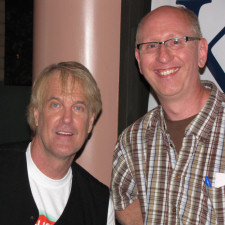
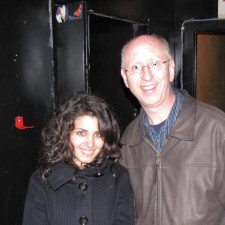

| |
Testimonials
Over the years, Chris has touched the lives of dozens of people around him. Here are some comments, picked at random, that have been posted.

| 
| |
" Chris has been a true inspiration to me. Not only as a life-coach, but also as a role model, and most importantly, a friend.
Without his encouragement, I probably still be making millions with Mary Hart on ET, and would not have had the courage to pursue a marginally successful career in new-age gospel music. Thanks a million Chris! "
John Tesh |
|
" I am where I am today largely due to Chris' artistic influence. I am a smoking hot, wildly successful singer/songwriter in Europe, though no-one in the U.S. seems to know who I am. Without Chris, I would still be smoking hot, but would probably not even be a household name in my own home.
Thanks, Chris, and I dedicate the rest of my career as a smoking hot, wildly successful singer/songwriter to you! "
xoxo Katie Melua xoxo |
|

| |
|